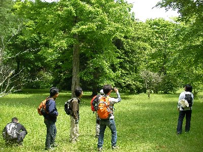
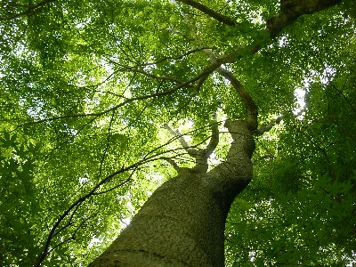
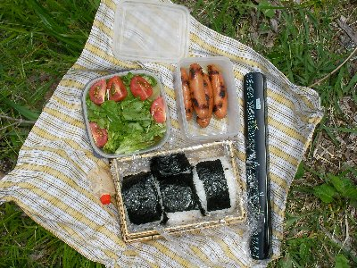
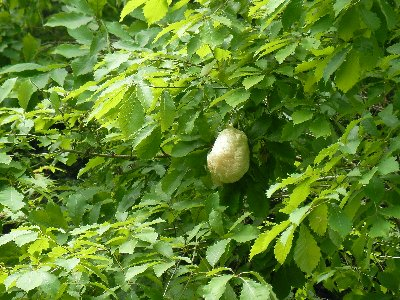
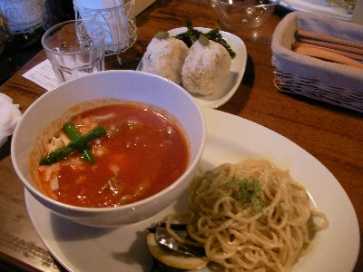

新緑ハイキング | 2010年5月 幹事：かむい |
|---|---|
| 梅雨間際、新緑が綺麗な時期です。雨も多いけど、それが緑を美しくしてく時期でもありますね。 そんな時期だから、「富士山の麓、緑と鳥の鳴き声が美しい丸火自然公園を散策しましょう」おにぎり部企画です。 今回は、総勢8名での参加。場所は、富士市の市街地から車で20分くらい。富士山麓にある丸火自然公園に集合です。 天気予報ではちょっと雨が降りそうで、開催が危ぶまれましたが、当日は明るい曇り。大丈夫そうです。 集合場所をちょいと間違えて（間違えた人数の方が多いのですが）、スタート遅くなりましたが10時に公園内の丸火自然館前出発しました。 | |
|  |  |
| 丸火自然公園って、広大な森をそのままの姿で公園にしている感じなんですね。山じゃないけど森って感じです。（だからアップダウン少ない♪） 園内を歩くいくつかのコースがあり、それぞれ万葉コース、冒険コース、冒険コース（ロング）と名前が付いています。 我々は、万葉コースから冒険コース（ロング）を歩きました。 まずは万葉コース、園内は「森」なので歩く道は当然未舗装路。新緑まぶしい木々の中を歩いていきます。 歩き始めて直ぐにグリーン広場に出ます。ちょっと小さめの草原に、所々大きな木が立っています。かむいさんの癒しの場所だそうです。 もうちょと歩くと、そこより大きな草原＋大きな木々、な場所にでます。大きくて太くて立派な木々達です。植林されたばかりの山を見ていると、こういう本当の木の様を忘れてますね。 いや〜、こういう場所って、ほんと癒されますね〜 大きな木って見てるだけで癒されます。 ひとしきり癒された後、中央広場まで歩きました。途中所々にアスレチック施設があったりします。 | |
 |  |
| 中央広場横にある富士見ヶ池で、金魚とカメを鑑賞したのち、冒険コースへと入ります。まあ、コースの感じは変わらないのですが。 しばらく歩くと、ひょうたん池に出たので、そこでお昼としました。もちろん、おにぎり部ですからおにぎり食べます！ 池の周りをよく見ると、池に張り出している木の枝に、白い泡がくっついています。蛙の卵ですね。へぇ〜、こういう蛙の卵、実物は初めてみました。 天気も程よい感じで曇り。雨は何とか持ちそうです。 さて、お腹を満たして休憩もしたので、また歩き始めます。ここからは人があまり来ないコースなのか、ちょっと荒れてきました。荒れると言うか鬱蒼としてきました。 こころなし、鳥のさえずりが聞こえなくなったような・・・・コースには「小鳥水飲み場」として、小さな水たまりがあるので、鳥はいるのでしょうが・・・私たちが行った時はいなかったけど。 冒険コースをずーっと歩いて行くと、溶岩洞穴ってとこに出ます。字のごとく洞穴ですね。それが２〜３箇所あったかな。それほど大きなものではありませんが、立ち寄ってみるには楽しいですね。 そんな感じの周回コースをまわり戻ってきました。ここってキャンプも出来るようで、この緑の広場が紅葉とかしたら綺麗そうだな〜 秋にキャンプでもしたいな〜と思ったりしましたね。 | |
|  カエルの卵 |  洞窟の中から |
| 汗を流したいので、帰りに富士のスーパー銭湯に寄りました。 そして、もうひとつのお楽しみ、富士吉原のご当地グルメ、「つけナポリタン」を食べに行きました。 つけ麺ならぬ、パスタをナポリタンに浸して食べる吉原商店街発ご当地グルメ。私は本日知りましたが、密かに人気のようです。 「つけナポリタン」を提供しているお店はかなり有るようで、私たちは地元の人に教えてもらい、「Cafe Sofarii」と言うお店に行きました。 ソファーとサファリを掛けてソファりのようです。お店はバーの様な感じで、テーブルとソファー、シックな内装です。お洒落だな〜、ここでつけナポリタン？ 全員「つけナポリタン sofarii風」を注文。このお店のナポリタンは牛すじを煮込んだもの。私はこれにおにぎりセットを注文。おにぎりがセット言うことは・・・・♪ つけナポ、うまい！ たんなるナポリタンだろう？と思っていましたが、ちょっと違うんですよ。濃いめのナポリタンスープ（シチューに近い感じ）に、パスタを絡めて食べる。いや、これ美味しいよ。 （やべ、書いていてヨダレ出てきそう。食べたくなった） パスタを食べ終わった後は、おにぎりをスープにいれてリゾット風に。これまた美味い！（食べたくなってきたでしょう？） | |
 |  |
| 今回も、楽しく美味しいハイキングでした。 いや〜、丸火自然公園は良いですね。自然そのままの公園で緑に癒されます。大きな木の下で昼寝とかしたら、気持ち良さそうです。何もしないで、寝転がっているだけでも良いかも。 そして新たな味「つけナポリタン」。これはアリですね。吉原ってなかなか行かないけど、こっち方面に行ったら、また寄りたいですね。とりあえず、食べてみて！ 写真＆コメント ｂｙ べっしー | |